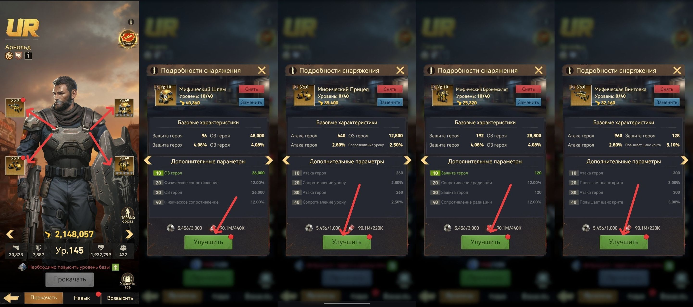
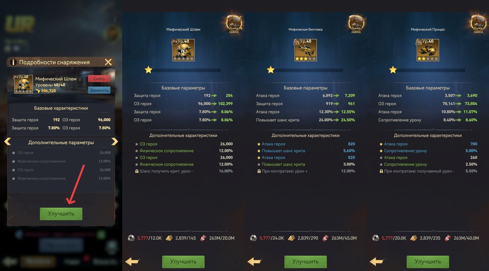

🔧 Улучшение снаряжения
🔧 Улучшение снаряжения У Вас будет несколько вариантов улучшения ваших снаряжений: А) Комплексное - Вы улучшаете равномерно и одновременно все снаряжения, которые у Вас есть. Б) Точечное - улучшаете только приоритетные части: • Танкам - только шлем и бронежилет • Ударникам - только винтовки и прицелы Как только улучшите их до 40-го уровня, можно начинать подтягивать остальные.

📈 Варианты улучшения снаряжения
⭐ Система звёзд С 20 уровнем Мастерской Вам откроется возможность делать звёзды (до 5 звёзд) для любого золотого снаряжения, которое вы улучшили до 40-го уровня. Для каждой звезды нужно собрать 5 частей. На последний кусок требуется «Чертёж Оборудования UR», который можно купить в Магазине Чести. Материалы на каждую следующую звезду растут.

⭐ Система звёзд снаряжения